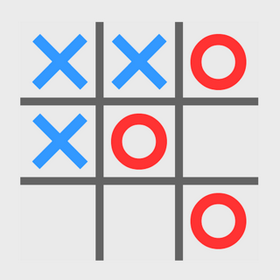
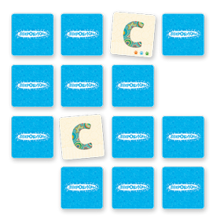

Каталог игр
-

Крестики-нолики (Tic-Tac-Toe)
Простая игра для двух игроков, где они по очереди ставят свои знаки на поле 3x3.
-

Игра "Змейка" (Snake)
Игрок управляет змейкой, которая должна собирать еду, увеличивая свою длину.
-

Пятнашки (15 Puzzle)
Классическая головоломка, где игрок должен собрать числа в правильном порядке, перемещая плитки.
-

Концентрация (Memory Game)
Игрок должен находить пары одинаковых карточек, открывая их по одной.
-

Тетрис (Tetris)
Игрок управляет падающими фигурами, называемыми тетромино, состоящими из четырех блоков.
-

Саймон (Simon)
Игрок должен следовать за последовательностью вспышек, повторяя их в правильном порядке.